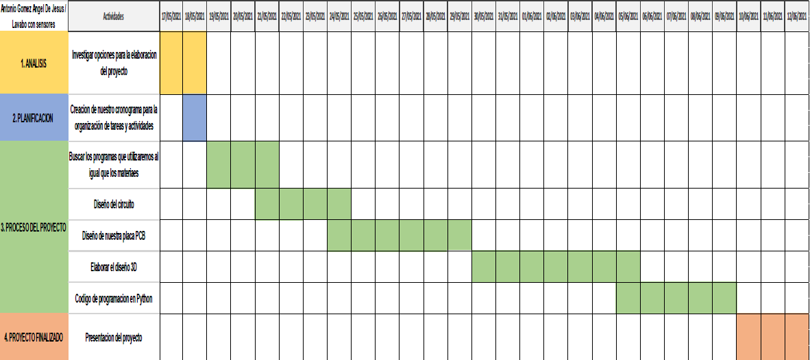
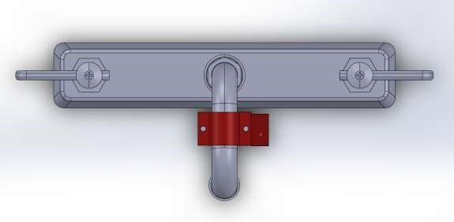
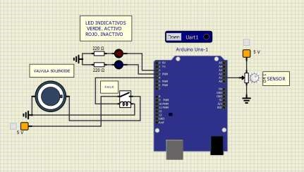
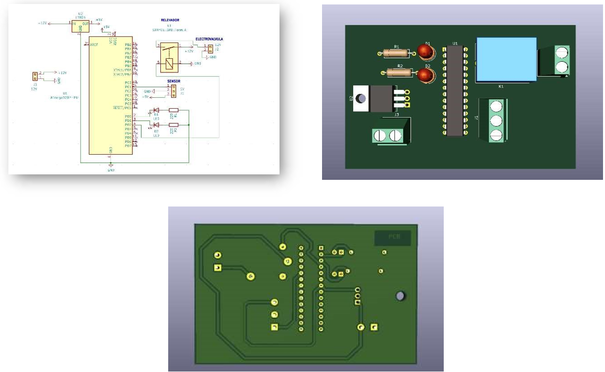
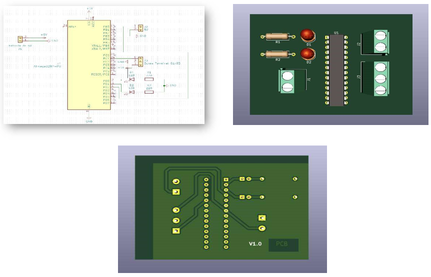
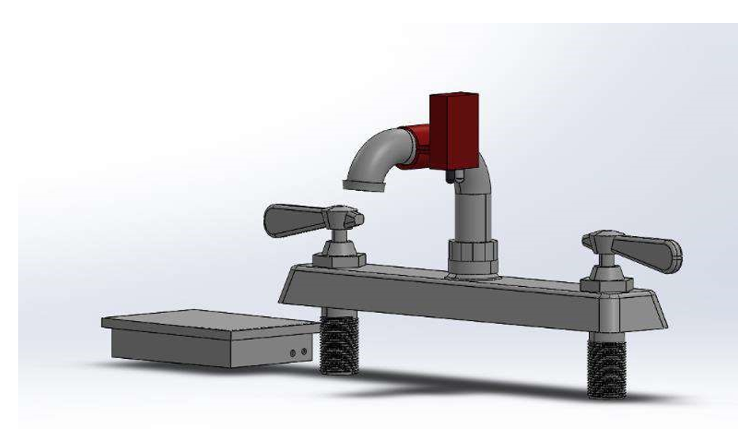
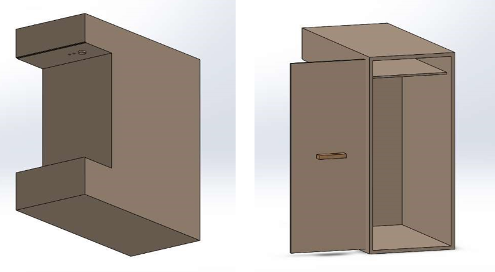
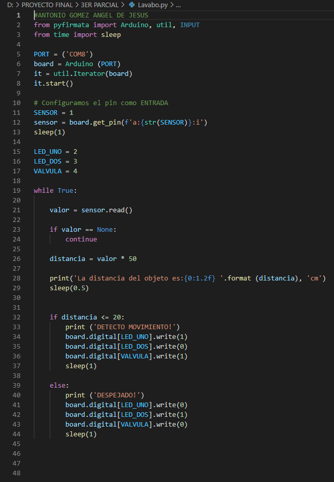
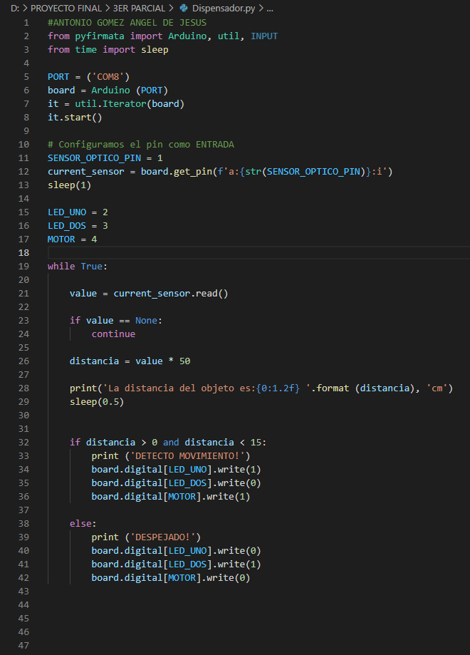

PLAN DE INVESTIGACION
HANDS CLEAN
NOMBRE DE LA INSTITUCIÓN. CENTRO DE BACHILLERATO TECNOLÓGICO INDUSTRIAL Y DE SERVICIOS NÚMERO 85°
ESPECIALIDAD. MECATRÓNICA
MATERIAS INVOLUCRADAS. MICRO, PLC Y IOCFASM
NOMBRE DEL ALUMNO. ANTONIO GÓMEZ ANGEL DE JESÚS
NOMBRE DE LOS MAESTROS.
- JOSÉ ALEJANDRO LEYVA MEDINA
- JOSÉ MANUEL GÓMEZ DÍAZ
- YORDANY LÓPEZ MARTÍNEZ
LUGAR. COATZACOALCOS VERACRUZ
FECHA. 05 DE NOVIEMBRE DEL 2021
INTRODUCCION.
En esta práctica lo que haremos es un lavabo junto con su dispensador de jabón ambos automatizados, las partes con las que contara el proyecto son los siguientes: placa PCB, código de programación, circuito simulado, diseño 3D. También nuestro cronograma o planeación del proyecto, el grado de innovación que tiene el proyecto al igual que el impacto social y por ultimo nuestros anexos que estos son las capturas del proceso del proyecto. Elaboramos este proyecto con el objetivo de que las personas al lavarse las manos no tengan que manipular con losmanerales o con el grifo, ya que algunas veces no se encuentra limpio y existen la posibilidad de contagiarse de alguna enfermedad. Ambos se accionan por medio de un sensor infrarrojo, este al detectar las manos delas personas activan el circuito.
PLANTEAMINETO DEL PROLEMAS.
Hemos observado que en el plantel e incluso en otros lugares se tienen rigurosos métodos de higiene por el cual resulta a veces antihigiénico y por eso en este proyecto se espera poder resolver este problema con un lavamanos automático y un dispensador de jabón, ambos automatizados que serviría para poder incrementar la higiene en este tipo de espacios en donde la higiene debe ser muy cuidadosa
JUSTIFICACIÓN DE LA INVESTIGACIÓN.
El lavabo automatizado tiene varios beneficios, una de los principales beneficios es el cuidado que ofrece al medio ambiente, también que este tipo de instrumentos hacen que la higiene sea la más óptica y que las personas no tengan la necesidad de tocar la llave o el grifo. Se reduciría la probabilidad de que alguna persona se contagie de alguna enfermedad.
OBJETIVOS DE LA INVESTIGACIÓN.
OBJETIVO GENERAL Elaborar un lavabo automatizado con el objetivo de que las personas al lavarse las manos no tengan que manipular con los manerales.
OBJETIVOS ESPECIFICOS. - Investigar sobre algunos lavabos automatizados que ya existen - Investigar más a fondo sobre el tema y realizar los pasos necesarios para así poder realizar el proyecto
MARCO TEÓRICO
Las griferías electrónicas accionan el caudal de agua de forma automática por proximidad al detectar la presencia física bajo el caño. Su tecnología incorpora un sensor de infrarrojos que deja fluir el agua cuando detecta un corte en su haz de luz. Así, el agua se activa al detectar las manos bajo el grifo y se para al alejarlas. Requieren de una fuente de alimentación energética para su funcionamiento, que puede ser por medio de batería o por conexión a la red eléctrica. Garantiza la higiene y seguridad en el baño, ya que no requieren ser manipuladas ni accionadas manualmente para hacer uso de ellas. Y es que las manos están continuamente en contacto con el mundo exterior y son el nexo de contacto de éste con otras partes de nuestro cuerpo. Además de una correcta higiene de manos como medida crucial para evitar la trasmisión de infecciones y gérmenes, disponemos de soluciones que tecnológicamente son una barrera para protegernos y proteger al resto
NOKEN. (02/02/2021). Qué son los grifos con sensor y cómo funcionan. 05/11/2021, de NOKEN Sitio web: (https://www.noken.com/mx/bloggrifos-automaticos-guia-de-compra)
Mi proyecto pretende ayudar o su objetivo de que las personas al lavarse las manos no tengan que manipular con los manerales o con el grifo, ya que algunas veces no se encuentra limpio y existen la posibilidad de contagiarse de alguna enfermedad. Con esto reduciríamos el consumo del agua y reduciría el porcentaje de dañar el lavabo.
CRONOGRAMA

DESCRIPCIÓN DEL GRADO DE INNOVACIÓN
En este proyecto permite al usuario lavarse las manos sin necesidad de manipular el juego de manerales o como todos lo conocen ‘’la llave’’, también junto al dispensador de jabón automatizado proporcionan más seguridad en tu salud, ambos funcionan gracias a un sensor infrarrojo que al detectar la mano de la persona se enciende el circuito, en el caso del lavabo se activa una electroválvula, esta deja que fluya el agua y en el caso del dispensador de jabón de igual manera se activa el circuito y enciende una mini bomba de agua. A diferencia de los demás lavabos automatizados es que si este se llega a descomponer es fácil de arreglar ya que cuenta con dos tornillos hacia los lados que estos ayudan al sensor a quedar fijo sobre el grifo, además de que hasta un alumno de la especialidad lo puede arreglar ya que no es un circuito muy complicado

DESCRIPCION DE IMPACTO SOCIAL O TECNOLOGICO
El impacto social de este proyecto es más que nada tratar que las personas concienticen a no contaminar el ambiente en el que estén, para así evitar el contagio de alguna enfermedad u otra cosa. También intenta concientizar a las personas para que, como sociedad, cuidemos más los lugares por los que transitamos día con día, ya que la limpieza y la higiene de un lugar concurrido es un objetivo de interés común.
CONCLUSION
En conclusión, este proyecto nos beneficia mucho a las personas, como ya lo comenté nos ayuda tanto en lo ambiental como en la salud, también es importante conocer cómo funciona el circuito, como elaborar una placa PCB junto al diseño 3D. En este proyecto practicamos lo ya aprendido en semestres anteriores y nos sirve de práctica para ser mejores cada día.
ANEXOS
Circuito del lavabo 
Placa pcb del lavabo 
Placa pcb del dispensador de jabon 
Diseño 3D del lavabo 
Diseño 3D del dispensador 
Codigo del lavabo automatizado 
Codigo del dispensador 